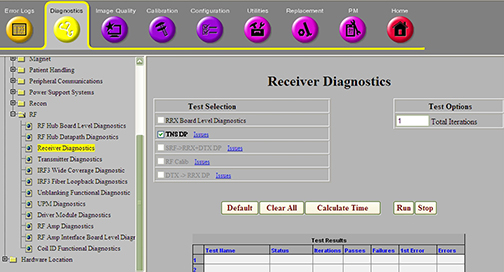
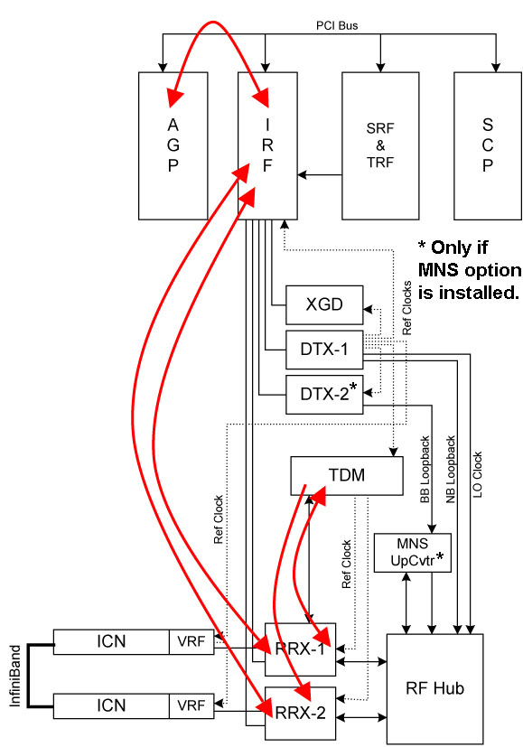

Operating Documentation
Direction 5500113, Rev# 3
Discovery MR450 1.5T Service Methods
Module Version 3.0, Version Date 11/4/09
Operating Documentation |
Diagnostics >> System Function >> RF >> Receiver Diagnostics
Diagnostics >> Hardware Location >> Magnet Room >> Receiver Diagnostics
Illustration 1: Receiver Diagnostics

The TNS Data Path diagnostic tests the Transient Noise Suppression (TNS) related connection between the RRX modules and the TDM modules. It also tests the TDM module’s ability to detect and signal transient noise (spikes). The first RRX module controls the TNS circuitry in the TDM module. When the TDM detects a spike event, it sends a notch signal to each RRX module. The RRX module responds by using analog and digital mechanisms to suppress the spike signal in the sampled data sent to the ICNs.
TDM Module
RRX to TDM Cables
TNS Circuits in the RRX Modules
Run and pass the RRX Boad Level Diagnostic before running the TNS Data Path diagnostic.
Illustration 2: TNS Block Diagram

The RRX module sets up a condition for the TDM to detect constant spike events, and verifies that each RRX module has notched out all of its data.
The RRX module sets up a condition so the TDM does not detect constant spike events, and verifies that each RRX module does not notch any data.
The RRX’s ability to count notch events and use an analog-only and digital-only means to notch data.
Output values are judged pass or fail. In the event of failure, the details of the failure can be found in the GE System Log.